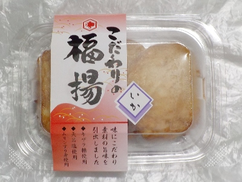
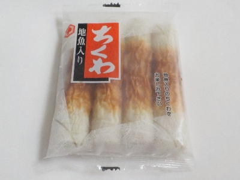
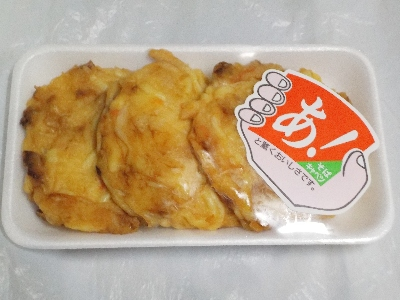

いいものを探そう ～出雲らへん～
島根県出雲市大社町杵築北3004
2024/10/07
出雲国大社食品のこだわりの福揚イカ。

「福」って書いてあると縁起がよさそうでいいですね。それだけでなんかありがたい気分になります。
天ぷらではなく、さつま揚げだそうです。出雲地方なら天ぷらになりそうですが、なぜなんでしょうね。
ゴロゴロしたイカが入っているものではなかったので、イカはあまり感じませんでした。ふっくらしてるけどほどよい弾力感があり、いい食感だなと思いました。味も旨味があって美味しかったです。
【出雲国大社食品TOP】
【地域TOP】
【HPTOP】
2024/07/20
出雲国大社食品の地魚入りちくわ。

地魚入りということで、輸入魚肉だけじゃなく国産魚肉も入っています。
「わさびじょうゆによくあいます。」と書いてあったので試してみました。竹輪の甘味とワサビ醤油の辛味がよく合って、味が濃くなって美味しかったです。
【出雲国大社食品TOP】
【地域TOP】
【HPTOP】
2024/04/14
出雲国大社食品のキャベツと中華そばの天ぷら

キャベツが沢山入っていて、ザクザクとした食感や、美味しいキャベツ味が楽しめました。
キャベツの主張が強いので、ちょっと一般的な天ぷらとは違う感じがしました。
【出雲国大社食品TOP】
【地域TOP】
【HPTOP】
2022/02/22
大社食品の天ぷら

半額になってた天ぷらを買って帰りました。
この天ぷらはやわらかくて甘かったです。旨味が多く、ご飯のおかずに丁度いいなと思いました。
【出雲国大社食品TOP】
【地域TOP】
【HPTOP】
【『大社町杵築らへん』の他の情報はこちら】
【おいしいものを食べよう。】【たくさん寝よう。】
【ソロ活をしよう!】【季節感のあることをしよう。】【動画視聴はほどほどに。】【当サイトの全てのコンテンツは無断転載禁止です。】